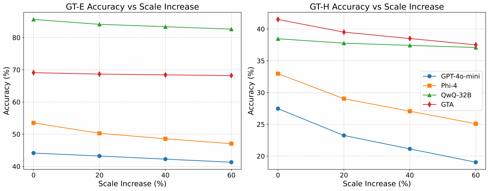

{kind=link}
Overview (TL;DR)
Can an LLM carry out a graph algorithm in language, rather than write a program that solves it? GT Bench tests whether models can interpret a graph, maintain intermediate state, and follow a sequence of dependent operations.
Across eight models, a seemingly simple choice—how the graph is represented—changes accuracy. No single encoding works best for every task, graph structure, and model. GTA turns this diagnosis into a method: choose a suitable representation for each problem, then plan and decompose the computation for a frozen executor LLM.
- 24 problems
- 44 task–structure settings spanning sparse graphs, dense graphs, and trees.
- 105,600 examples
- Encoded examples across four equivalent representations, with algorithmically verified reference answers.
- +15.6 / +8.5 points
- Phi-4 accuracy gains on GT Bench Easy / Hard, without updating the executor's weights.
Abstract
Large Language Models (LLMs) are increasingly asked to reason over structured data such as graphs, yet how reliably they can carry out multi-step graph algorithms in language remains unclear. Existing evaluations tend to use simple tasks on small graphs, to score code generation rather than reasoning over the graph itself, or to fix a single input format. We introduce Graph Theory Bench (GT Bench), a benchmark covering 24 classical graph problems in 44 task–structure settings, with over 100,000 examples across four representations: natural language, structured language, adjacency list, and adjacency matrix. Evaluating eight LLMs on GT Bench shows that accuracy is strongly tied to the input representation, that the best representation shifts with graph density, size, and topology as well as with the model, and that this sensitivity persists, attenuated, in the strongest reasoning models. Building on these observations, we propose the Graph Theory Agent (GTA), which pairs a preference-trained representation selector with plan-and-decompose scaffolding around a frozen executor LLM. GTA lifts Phi-4 from 53.5% to 69.1% on the benchmark's easy split and from 33.0% to 41.5% on its hard split, outperforming eight prompting and agent baselines, and transfers without retraining to GraCoRe and NLGraph. The benchmark, generation pipeline, and agent are open-source. Code: https://github.com/xzx34/GTA.
Abstract reproduced from the manuscript. The code release is forthcoming; its repository is not yet publicly accessible.
Key Findings & Why They Matter
1.Representation is part of the reasoning problem
On sparse-graph Connectivity, mean accuracy across the eight evaluated models ranges from 60.5% to 89.1% across encodings. The best format depends on the model and graph structure, so fixing one representation can conceal capabilities or exaggerate weaknesses.
2.Hard graph problems expose substantial headroom
All eight models lose accuracy from the Easy to the Hard split. QwQ-32B, for example, falls from 85.62% to 38.46%. Difficulty also changes model rankings: strong performance on easy instances does not establish reliable multi-step reasoning.
3.Selection and decomposition make complementary contributions
With Phi-4 as the frozen executor, full GTA reaches 69.1% on GT-E. Removing representation selection reduces this to 58.2%; removing planning and decomposition reduces it to 62.1%. Even a selector retrained for direct execution reaches 63.8%, leaving an additional 5.3-point gain from the full pipeline.
4.The gains transfer where reasoning headroom remains
Components trained on GT Bench transfer to GraCoRe and NLGraph without benchmark-specific retraining. They also work with unseen executors: DeepSeek-R1 improves from 64.1% to 72.2% on GT-H, while its near-ceiling scores on easier evaluation sets remain essentially unchanged.
How GTA Works
The graph and task remain unchanged. GTA adapts the representation and the reasoning procedure around the model.
- Select a representation. A learned Selector chooses natural language, structured language, an adjacency list, or an adjacency matrix based on the graph and task.
- Generate an algorithmic plan. A prompted, off-the-shelf Generator outlines the high-level strategy, rather than producing executable code.
- Decompose the plan. A trained Decomposer turns the strategy into concrete, sequential reasoning steps.
- Execute in language. The frozen Executor works through those steps to compute the answer, without external code execution.
The Selector and Decomposer learn from demonstrations and preferences grounded in downstream task success. The Generator and Executor are not fine-tuned. This is a trained auxiliary framework around a frozen model, not a training-free agent.
Results
GTA achieves the highest accuracy across all four evaluation columns in the paper's comparison, using the same frozen Phi-4 executor as the baselines.
| Method | GT-E | GT-H | GraCoRe | NLGraph |
|---|---|---|---|---|
| Vanilla | 53.5 | 33.0 | 66.8 | 80.2 |
| CoT | 52.1 | 34.2 | 67.2 | 81.0 |
| LLM-Debate | 58.9 | 35.5 | 70.3 | 84.4 |
| Self-Refine | 56.8 | 34.6 | 68.0 | 83.1 |
| GraphTeam* | 50.1 | 27.2 | 51.6 | 63.2 |
| ADAS | 52.8 | 32.7 | 67.5 | 80.5 |
| AFlow | 62.0 | 37.2 | 75.4 | 86.2 |
| MaAS | 63.2 | 37.6 | 78.8 | 86.0 |
| GTA (Ours) | 69.1 | 41.5 | 80.5 | 89.4 |
GT-E / GT-H: GT Bench Easy / Hard. GTA is trained only on GT Bench. The method comparison uses 1,000 instances per dataset, with GraCoRe's Graph Understanding subset and sampled NLGraph instances; inference temperature is 0.01. *GraphTeam is adapted to reasoning-only execution, with search, coding, and tool execution disabled.
{kind=link}

Inside GT Bench
The benchmark covers 20 problems on both sparse and dense graphs, plus four tree-specific problems. Every instance has four equivalent encodings. The 105,600-example total counts these encoded versions, not independent graphs.
- Connectivity and graph structure: Connectivity, Bipartiteness Check, Minimum Cycle Length, Biconnected Components, Bridge Count, Triangle Count, and Cycle Count.
- Paths and combinatorial problems: Eulerian Path and Circuit, Hamiltonian Path and Circuit, Maximum Clique Size, and Maximum Independent Set.
- Weighted optimization and flows: Shortest Path Length, Spanning Tree Count, Minimum Spanning Tree, Second Minimum Spanning Tree, Maximum Flow, Minimum Cut, and Min-Cost Max-Flow.
- Tree-specific problems: Tree Diameter, Tree Centroid, Lowest Common Ancestor, and Tree Maximum Independent Set.
Graphs are generated automatically, with reference answers computed by task-specific algorithms. Evaluated sizes range from 6 to 60 nodes, calibrated by task complexity and prompt length. Easy and Hard are defined by the task and graph structure, not simply by node count.
Frequently Asked Questions
What is the difference between GT Bench and GTA?
GT Bench is the evaluation benchmark. GTA is the agent framework developed from its findings: a representation Selector, an Algorithm Generator, a Decomposer, and a frozen Executor.
Does GTA solve graph problems by generating code?
No. The evaluated pipeline reasons in language without external code execution. Algorithms are used to generate and verify benchmark reference answers, not to solve test questions on behalf of the executor.
Which parts of GTA are trained?
The Learned Selector and Algorithm Decomposer are optimized using supervised and preference-based training. The Algorithm Generator is prompted without task-specific fine-tuning, and the Executor's weights remain frozen.
Is one graph representation always best?
No. The best encoding varies with the task, graph density, size, topology, and model. GTA selects a representation per instance rather than imposing a universal format.
What do the results not establish?
These experiments evaluate synthetic classical graph problems and transfer to related graph benchmarks. They do not establish performance on domain-attributed molecular or social graphs, guarantee exact solutions, or show that accuracy remains stable at arbitrary graph sizes.
Resources
Read the full paper (PDF), including task definitions, training details, ablations, and case studies.
The arXiv record and public code release are forthcoming.
BibTeX
@misc{xu2026gta,
title = {{GTA}: Graph Theory Agent and Benchmark for
Algorithmic Graph Reasoning with {LLMs}},
author = {Xu, Zixiang and Wang, Yanbo and Wang, Chenxi and
Gao, Lang and Song, Zirui and Huang, Yue and
Chen, Zhaorun and Zhang, Xiangliang and Chen, Xiuying},
year = {2026},
note = {Preprint},
url = {https://xzx34.github.io/gta/}
}